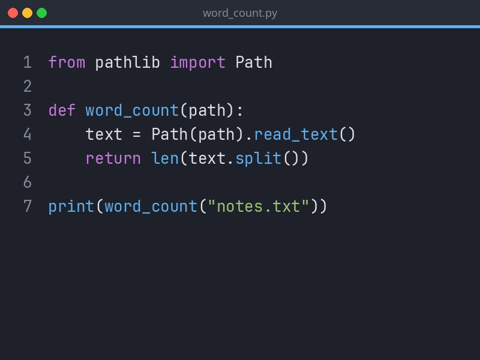
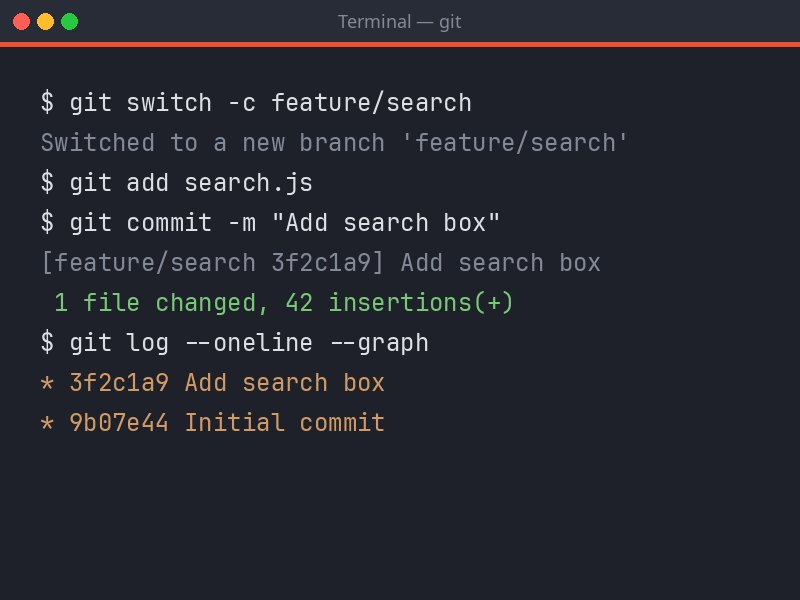
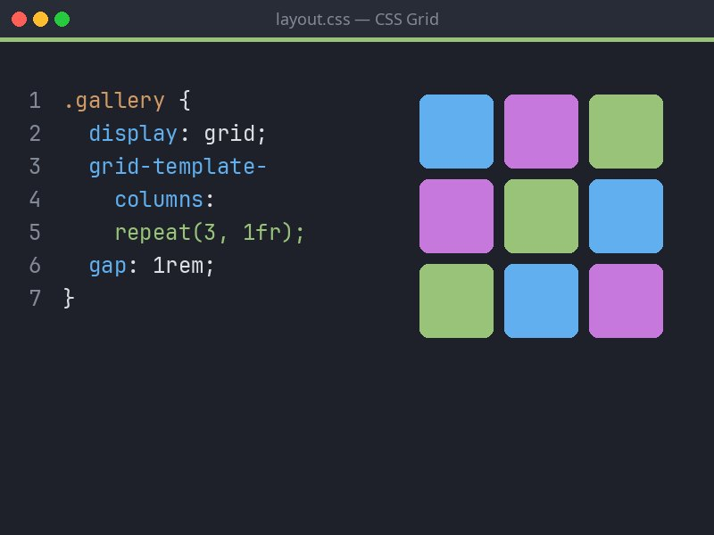

Short, practical notes about programming languages, developer tools
and the software world – written for students who learn by building.
Latest Posts

Python for Beginners: Your First Useful Script
| Python
Forget “Hello, World”. Your first script should solve a real problem. We write a
tiny word_count function that reads a text file and counts its words – in only
five lines of Python.
Read more: Python for Beginners
The script uses three ideas every beginner needs:
Importing from the standard library – pathlib.Path opens files safely.
Functions – wrapping the logic in word_count(path) makes it reusable and testable.
Built-in methods – split() cuts the text on whitespace and len() counts the pieces.
Next step: add a test for an empty file. The official
Python tutorial is the best free place to continue.

Git Basics: Branches, Commits and Pull Requests
| Tools
Git is the safety net of every developer. Learn the
four commands you will use every day and why every new feature deserves its own
branch.
Read more: Git Basics
git switch -c feature/name – start a new branch for one feature.
git add file – choose which changes go into the next commit.
git commit -m "message" – save a snapshot with a short, clear message.
git push – upload the branch and open a pull request for review.
Tip: write commit messages in the imperative: “Add search box”, not “added stuff”.
The free Pro Git book explains every command in detail.

CSS Grid in 10 Minutes
| Web
Responsive layouts used to need floats and hacks. With CSS Grid a three-column
gallery is three lines of code – and one media query turns it into a single column
on phones.
Read more: CSS Grid in 10 Minutes
display: grid turns a container into a grid.
grid-template-columns: 1fr 1fr 1fr creates three equal columns.
gap: 1rem adds space between the cells – no more margin tricks.
Start mobile first: one column by default, then add columns in
@media (min-width: …) rules. This very blog uses the same technique on the
Projects page.